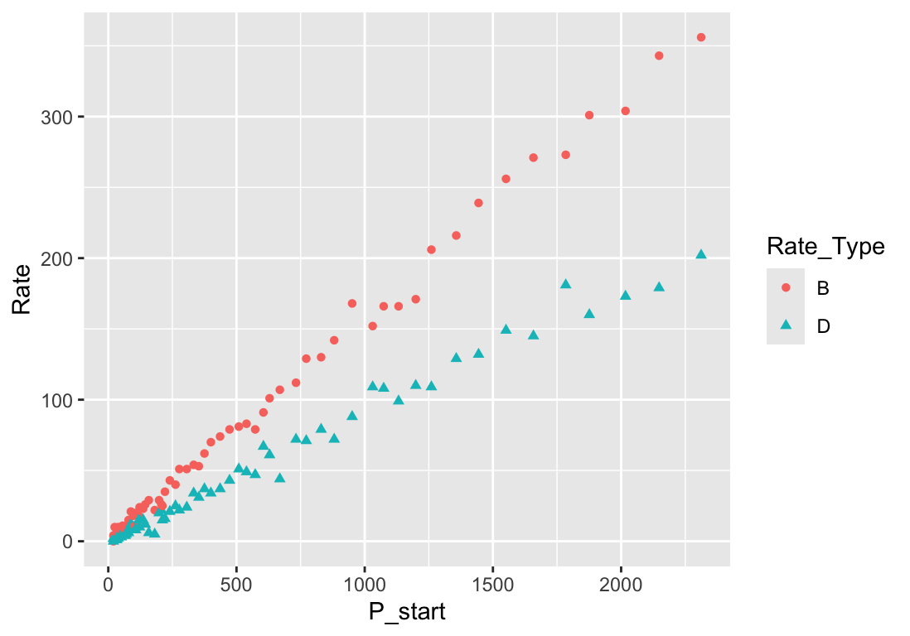

Section 2.1 An Agent Based Motivation for Dynamics
We start our modeling by thinking about an agent-based model. An agent-based model is a computer simulation in which abstract agents are defined on a computer with a collection of rules for what they do in time and how the different agents interact with one another. In the context of a population, we might think of the agents as simulating individuals within a virtual population. The rules describe the patterns of life that the individuals follow.
By first thinking about how we would implement an agent-based model for a system, we are engaging the process of establishing an abstract representation of the fundamental assumptions identified in a hypothesis on how the system develops in time. Generally, we want to minimize the number of rules while still capturing the essence of our hypothesis. Allowing the computer simulation to follow our rules, we can observe the dynamics relatively quickly and make virtual measurements that might guide a more mathematical model.
Subsection 2.1.1 NetLogo Overview

1
ccl.northwestern.edu/netlogo/2
www.gnu.org/licenses/gpl-2.0.htmlRather than explain everything about NetLogo here, I refer you to the excellent documentation on the NetLogo website. There are three useful tutorials to get started: Tutorial 1 (Running Models), Tutorial 2 (On Turtles and Patches), and Tutorial 3 (Building a Model). In addition, the NetLogo Programming Guide explains the structure of how to program and the NetLogo Dictionary summarizes the commands that agents automatically inherit.
3
ccl.northwestern.edu/netlogo/docs/tutorial1.html4
ccl.northwestern.edu/netlogo/docs/tutorial2.html5
ccl.northwestern.edu/netlogo/docs/tutorial3.html6
ccl.northwestern.edu/netlogo/docs/programming.html7
ccl.northwestern.edu/netlogo/docs/dictionary.htmlDemo code associated with this document was written to run in NetLogo 6.4. Links are provided to download the full model. Elements of the code will be discussed. Individuals in the population will be modeled as turtle agents (meaning they are movable).
Subsection 2.1.2 Environmentally Naive Births and Deaths
When trying to define rules for how an individual will give birth to new individuals or die, we might consider complicating factors. For example, we might expect that births and death would depend on the health of the individual as well as the state of the environment in which the individual is living. However, the simplest models would not take these into account. The simplest rule for reproduction might be to decide randomly whether or not to give birth at a given cycle (tick) for the system. Similarly, we might have death be decided randomly.
We start with the NetLogo simulation available here:
naive-population.nlogo. The interface for the simulation is illustrated in Figure 2.1.1. In the initial-population data field, you can set the number of individuals in the population at the start of the simulation. Then there are sliders that allow you to control the percent of individuals during each population cycle that will give birth or that will die. When you press the setup button, the population will reset based on your initial-population entry. When you press the go button, individuals will scramble around the screen randomly and give birth or die based on your settings. Press go a second time to stop the simulation.naive-population.nlogo.You can inspect the code describing the rules for the simulation by selecting the
code tab at the top of the NetLogo window. Much of the code specifies rules for the agent and environment visualization, such as stating that our individuals are people, defining their shapes and colors, and giving rules for how to move randomly on the screen. This gives us something interesting to look at, but does not have much to do with the biologically relevant questions of how the population changes.In the
go code fragment, there are statements where we ask all people to do three things: try-reproduce (give birth or not), move, try-survive (die or not). The names include “try-” as a way to indicate there is some decision involved here. The code fragment in Listing 2.1.2 is a minimal approach for implementing random birth and death that is naive in regards to the environment. The expression random-float 100 creates a random number between 0 and 100, so saying if random-float 100 < birth-percent [...] calculates such a random number and compares it to the number in the birth-percent input field. If the random number is less than birth-percent, then the command inside the brackets (hatch 1) is sent to the corresponding person under simulation (creating a new person). A similar calculation occurs for each person to see if they should die (remove the person).to try-reproduce
;; global 'birth-percent' = percent of cycles
;; in which to reproduce
if random-float 100 < birth-percent [ hatch 1 ]
end
to try-survive ;; and failure is to die
;; global 'death-percent' = percent of cycles
;; in which to die
if random-float 100 < death-percent [ die ]
end
The actual code is slightly more complex, in that it actually creates temporary agents that are markers for birth and death events. This allows the simulation to count how many events occur each cycle by checking the simulation for how many
birth-markers or death-markers are in the system. You will also find code at the start of the go code that kills all of the markers before proceeding so that each cycle of the simulation only shows markers for the most recent set of events.If we ran a simulation using these naive rules for reproduction and survival, with every agent randomly deciding whether it will reproduce and whether it will die, we would discover that there is a lot of randomness but that the number of births and deaths seem to be related to the population size. The following graph is typical of such a simulation.
birth-percent = 16 and death-percent = 9 and initial-population = 20.This figure illustrates that larger populations result in more births and deaths. In fact, because of how the birth and death events were randomly determined based on a percentage of the number of tick cycles for each individual, we would expect that the number of births and deaths are approximately just the corresponding percentage of the total population size. Of course, because the simulation involves random decisions, there are fluctuations above and below that amount. This randomness is called demographic stochasticity.
We would like to look at the relationship between the number of births and deaths with respect to the population size. From the simulation, we can export the data for the simulation graph. If you right-click (or control-click) on the graph, you should see a menu that includes an option to copy the image or to export the results. When you select
Export..., NetLogo will save the data points for the graph as a CSV file that can be imported into a spreadsheet or data analysis file. The file corresponding to our graph is available here: naive-population-graph-export.csv. If you open this with a spreadsheet application (e.g., Excel), you should see a view similar to Figure 2.1.4.How is this sheet organized? NetLogo reports a variety of metadata at the top of the export file. For example, the second row contains the name of the NetLogo program and the third row contains the time when the data were created. Then we have a summary of the model parameters that were used for the given simulation, which we need to properly document the data or to perform analysis on the results. The last set of metadata for this file is a list of the “pens” (plots) that were included in the graph.
The actual data coming from the simulation starts in row 20. Each pen (plot) gets four reported values, where the first two values are the coordinates of the plotted point. Because this graph was plotting values against time, the \(x\)-coordinates for each pen are all the same and correspond to the time as tracked by the number of completed cycles. The values of the state variables \(P\text{,}\) \(B\text{,}\) and \(D\) correspond to the \(y\)-coordinates of each plot, appearing in columns
B, F, and J, which are ordinally (counting order) the 2nd, 6th, and 10th columns.Before we proceed, we also need to understand that NetLogo is reporting values for the population \(P\text{,}\) births \(B\text{,}\) and deaths \(D\) that were present at the end of each cycle. That is, there are actually two different population values associated with each time cycle. The population at the start of the cycle \(P_{\mathrm{start}}\) represents the number of individual people in the simulation. Then we go through the births and deaths resulting in a new population value at the end of the cycle \(P_{\mathrm{end}}\text{.}\) The values are related by the equation
\begin{equation*}
P_{\mathrm{end}} = P_{\mathrm{start}} + B - D\text{,}
\end{equation*}
in that the final number of individuals can be found by adding the number of births and then subtracting the number of deaths. The population column in the dataset corresponds to \(P_{\mathrm{end}}\text{,}\) and we are going to want to know \(P_{\mathrm{start}}\text{,}\) which we can find by solving the equation. This gives
\begin{equation*}
P_{\mathrm{start}} = P_{\mathrm{end}} - B + D\text{.}
\end{equation*}
Once we import our data, we will generate a new column that contains the value of \(P_{\mathrm{start}}\text{.}\) Then we will examine the relation between the number of births and deaths and the starting population value. Specifically, we will create graph corresponding to \((P_{\mathrm{start}},B)\) and \((P_{\mathrm{start}},D)\text{.}\) The code to generate this result using tidyverse libraries is given below.
library(readr) # To load CSV files (read_csv)
library(dplyr) # To reorganize (select)
library(tidyr) # To tidy data (pivot_longer)
library(ggplot2) # To work with graphs (ggplot)
# Import the data
netlogo_data <- read_csv("naive-population-graph-export.csv",
skip = 19, col_names = FALSE)
# Select only columns 1, 2, 6, 10 and assign names
# Then add a new column for P_start
netlogo_table <- netlogo_data |>
select(tick = 1, P_end = 2, B = 6, D = 10) |>
mutate(P_start = P_end - B + D)
# Pivot columns B and D values into a single column Rate
# Then plot Rate vs P_start to see relations
netlogo_table |> pivot_longer(cols = c(B, D),
names_to = "Rate_Type",
values_to = "Rate") |>
ggplot(mapping = aes(x = P_start, y = Rate,
color = Rate_Type, shape = Rate_Type)) +
geom_point()

The plot suggests that the number of births and deaths occurring during each time period is approximately proportional to the population size (i.e., linear graphs passing through \((0,0)\)). Let’s add best fit proportional lines and then see what the corresponding coefficients for the models mean.
# Find the model coefficients
lm(formula = B ~ 0 + P_start, data = netlogo_table)
lm(formula = D ~ 0 + P_start, data = netlogo_table)
# Redraw the figure adding the best fit proportional lines
netlogo_table |>
pivot_longer(cols = c(B, D),
names_to = "Rate_Type",
values_to = "Rate") |>
ggplot(mapping = aes(x = P_start, y = Rate,
color = Rate_Type, shape = Rate_Type)) +
geom_point() +
geom_smooth(method = "lm", formula = y ~ 0 + x,
linewidth = 1, se = FALSE)
Call: lm(formula = B ~ 0 + P_start, data = netlogo_table) Coefficients: P_start 0.1575 ----- Call: lm(formula = D ~ 0 + P_start, data = netlogo_table) Coefficients: P_start 0.09003
When we look at the coefficients, notice that they are essentially the model parameters. The proportionality coefficient for the birth rate was estimated as 0.1575, which is remarkable close to decimal value for the model parameter
birth-percent of 0.16. Similarly, the proportionality coefficient for the death rate was estimated as 0.09003 and is remarkably close to the decimal value of death-percent of 0.09.Finally, we look at the per capita birth and death rates. Recall that per capita rates are calculated by dividing the regular rate by the population size. In our case, this means we divide it by the value
P_start.# Pivot columns B and D values into a single column Rate
# Then calculate per capita rates
# Then plot per_capita_rate vs P_start to see relations
netlogo_table |> pivot_longer(cols = c(B, D),
names_to = "Rate_Type",
values_to = "Rate") |>
mutate(per_capita_rate = Rate / P_start) |>
ggplot(mapping = aes(x = P_start, y = Rate,
color = Rate_Type, shape = Rate_Type)) +
geom_point()
Notice that the per capita graph has more randomness for small populations. This is typical behavior for demographic stochasticity, as the random variation in births and deaths is much larger relative to the population size when the population size itself is small. However, you should still be able to see that the per capita rates are roughly constant across the populations. Those constant values correspond precisely to the proportionality constants that we found earlier.
This should make sense. The proportional models we found earlier were saying that the number of births \(B\) are a coefficient times \(P_{\mathrm{start}}\text{,}\) say \(B = b \cdot P_{\mathrm{start}}\) where we estimated \(b \approx 0.1575\) (and our simulation used the exact value \(b=0.16\)). But the per capita rate is defined by \(\frac{B}{P_{\mathrm{start}}}\text{.}\) Based on our proportional model, this must mean the per capita birth rate is
\begin{equation*}
\frac{B}{P_{\mathrm{start}}} = \frac{b \cdot P_{\mathrm{start}}}{P_{\mathrm{start}}} = b\text{.}
\end{equation*}
In other words, a birth or death rate that is proportional to the population size means the same thing as saying that the corresponding per capita rate is constant.
Subsection 2.1.3 Density-Dependent Births and Deaths
A more complex rule for population dynamics would include density-dependence. A population does not grow without bound. When the population is crowded, the birth and death rates for individuals change. Competition between individuals might result in fewer resources per individual. Crowded conditions might increase sickness or injuries. Such conditions generally lower the birth rates and increase the death rates for the population.
One simplistic approach to simulate these density-dependent effects in NetLogo would be to identify how many individuals are on a common patch and treat that as the local density. We might then directly increase the percentage of individuals that would die based on this density. This approach captures the idea of density dependence but does not attempt to attribute those changes to actual interactions. More advanced simulations would require directly modeling the environment itself.
One possible implementation for a NetLogo simulation is given here:
density-dependent-population.nlogo. The interface is illustrated in Figure 2.1.9. The simulation allows you to specify the initial population size, the birth rate as number of births per thousand individuals per cycle, and options to find the death rate that decreases as a population increases. The death rate calculates for each individual a value local-death-percent based on the how many individuals are sharing the patch where the individual is located. Let \(p\) represent a specific patch, and let \(n_p\) represent the number of individuals located on patch \(p\text{.}\) Then local-death-percent, represented by a variable \(d_p\) (per capita death) at the patch is calculated by
\begin{equation*}
d_p = d_0 - a n_p,
\end{equation*}
where \(d_0\) is the reference
death-per-thousand converted to a decimal and \(a\) is the death-increment.density-dependent-population.nlogo.To implement this strategy, each individual will need to keep track of its own
local-death-percent, which is implemented in NetLogo by the following command.people-own [ local-death-percent ]
We cause each patch to update all of the agents that belong to that patch with an action called
density-update. The patch identifies all local individuals and then tells each person on the patch what their local death probability should be based on how many neighbors are competing for the same resources.to density-update ;; this is a command for patches
;; create a temporary variable that counts all individuals on patch
let density count turtles-here
;; use that density to compute a variable death percentage for
;; each individual living on the current patch
ask turtles-here [
;; death-percent is "y-intercept"
;; death-increment is "slope"
set local-death-percent (death-percent + death-increment * density)
]
end
Now, the rest of the simulation is essentially the same as before, except that the
attempt-survive action has been modified to use local-death-percent.to attempt-survive ;; and failure is to die
;; 'local-death-percent' = calculated by patches
if random-float 100 < local-death-percent [ die ]
end
The following graph comes from such a simulation using this type of density-dependence. The data for the graph has been exported as
density-dependent-population-graph-export.csv.
birth-percent = 16 and death-percent = 9 and death-increment = 0.3.Notice that the population does not grow indefinitely. As the population increases, the death rate increases faster than the birth rate so that the population growth rate ultimately decreases. The population levels out. We say that the population is approaching a carrying capacity, which is the population that the environment can sustain at a steady-state.
Let us look at how the birth and death rates relate to the population size, similar to what we did earlier with the naive birth/death model. We will import the density-dependent data into R and plot the per capita birth and death rates against the population size at the start of the cycle.
library(readr) # To load CSV files (read_csv)
library(dplyr) # To reorganize (select)
library(tidyr) # To tidy data (pivot_longer)
library(ggplot2) # To work with graphs (ggplot)
# Import the data
netlogo_data <- read_csv("density-dependent-population-graph-export.csv",
skip = 19, col_names = FALSE)
# Select only columns 1, 2, 6, 10 and assign names
# Then add a new column for P_start
netlogo_table <- netlogo_data |>
select(tick = 1, P_end = 2, B = 6, D = 10) |>
mutate(P_start = P_end - B + D)
# Pivot columns B and D values into a single column Rate
# Calculate per capita rates.
# Then plot per capita rates vs P_start to see relations
netlogo_table |> pivot_longer(cols = c(B, D),
names_to = "Rate_Type",
values_to = "Rate") |>
mutate(per_capita_rate = Rate / P_start) |>
ggplot(mapping = aes(x = P_start, y = per_capita_rate,
color = Rate_Type, shape = Rate_Type)) +
geom_point() +
geom_smooth(method = "lm", formula = y ~ x)
Notice that the per capita birth rate is essentially constant across the different population sizes. That is exactly how the simulation was set up to behave. Now notice how the per capita death rate is increasing as the population gets larger. There will be a point where the per capita death rate exactly matches the per capita birth rate. At that population size, the number of new births will exactly balance the number of deaths. This population will be the carrying capactiy. Notice that if the population is above the carrying capacity, the per capita death rate will exceed the birth rate causing the population to decline. We will explore this idea mathematically in the study of equilibrium values, of which a carrying capacity is an example.
Motivated by dynamics of a population simulated with births and deaths, we will next look at deterministic models for population growth. The agent-based simulations we have just been discussing included demographic stochasticity, the randomness related to random birth and death events. In our deterministic models that are about to be developed, the models will not include the stochasticity. They will represent the average behavior expected for a population. For large population sizes, demographic stochasticity is negligible, so we could also think of our deterministic models as describing behavior of large populations.